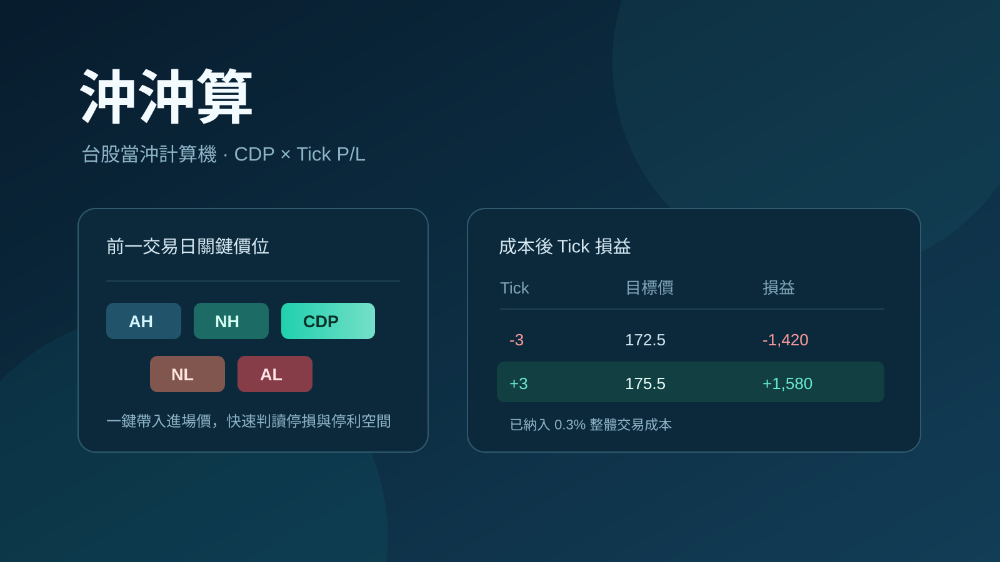

作品 · 量化投資
沖沖算
2026.08 · 個人專案

FIG. 04 — 產品主畫面
關於這個作品
沖沖算是為台股盤中決策打造的輕量網頁工具。輸入股票代碼後，系統透過 FinMind 取得最近有效交易日的最高、最低與收盤價，立即推導 AH、NH、CDP、NL、AL 五個關鍵價位。
使用者再輸入實際入場價與交易股數，工具會依台股價格級距逐 Tick 計算 -10 至 +10 Tick 的目標價、扣除整體成本 0.3% 後的損益與報酬率，讓停損與停利空間在盤中一眼可判讀。
作品亮點
FinMind 最近有效交易日高低收，自動算出 AH／NH／CDP／NL／AL
點擊關鍵價位即可帶入實際入場價，快速建立盤中試算
依台股價格級距正確換算 -10～+10 Tick 的目標價
統一扣除 0.3% 整體成本，直接顯示成本後賺賠與轉正報酬門檻